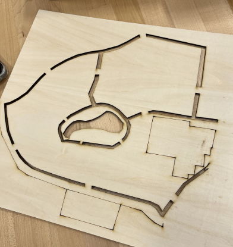

Final Project: Tactile Campus Maps
April 30th, 2025
Bibliography
Esri. “Tactile Maps Built with GIS Help People Who Are Blind Gain Spatial Awareness,” June 27, 2023. https://www.esri.com/about/newsroom/arcnews/tactile-maps-built-with-gis-help-people-who-are-blind-gain-spatial-awareness. This source is helpful for looking at how GIS and gps mapping systems can help the creation of tactile maps. The article details work in Europe that utilizes symbology keys, and explains issues of customization, and being able to zoom in on specific areas. This article is a good starting point to examine aspects of creating tactile maps and what we might want to include/ learn from. Pahaoja, Samuli. “Tactile Maps Easily | Touch Mapper.” Touch Mapper - Tactile Maps for the Visually Impaired. Accessed March 25, 2025. https://touch-mapper.org/. TomTom. “Tactile Mapping: Helping the Blind Find Their Way | TomTom Newsroom.” Accessed March 25, 2025. https://www.tomtom.com/newsroom/explainers-and-insights/tactile-mapping-helping-the-blind-find-their-way/. This source provides a solid framework for defining what a tactile map is and why tactile maps are necessary societal tools. It goes into the history of tactile maps, detailing when they were first created in the 1800s, and how they evolved as time went on. It debunks the suggestion that tactile maps are of no use to those who are visually impaired. It also asserts that everyone, even those with no visual impairment, should use tactile maps to enhance their understanding of the world around them.
Interviews
Elizabeth Nako Interview Journey Map

Elana Interview Interview Journey Map

Nancy Sharon Interview Journey Map

Conducting these interviews was a really positive experience. Everyone seemed so genuinely exicted about the projects potential and were so willing to help. Speaking with people who experience visual impairment or work with visually impaired people helped immensely to define our problem and understand what will be useful for navigation or not. We conducted these interviews with either two or three of us at a time. This approach was nice since someone could take notes, and others could ask questions. While we had a list of 8 questions to go off of, I found that the interviews ended up flowing much more naturally than going down the list, and the answers were most productive when this happened.
Brainstorming and Themes

Since we took a bit longer to conduct our interviews we had done extensive research and brainstorming before coiming together to synthesize this information into themes. This allowed us to quickly narrow down our main points. I feel that we have a well defined problem and feasible solution at this point.
Feedback
We recieved feedback from the other teams most of which was very helpful. Unfortunately we did not have much of a prototype to showoff at this point, but we still learned from talking to others. Here is our notes on the feedback: Notes from presenting: Master map is a good idea, just anyone new to campus is helpful not just those who are visually impaired Are you planning to use smaller chunks or just a big map Entrances of academic buildings is more apparent How are you determining which parts are relevant Quantitative measurement? Test different scales Inclines: Stacks of the material? Different texture Cartoon of campus not a measurement of campus Guitar group feedback: Likes: 3D printed ideas Texture ideas good Criticisms: How to differentiate from the textures currently Questions: Some type of key? How big is this gonna be? Where are you going to place it? Why not just have map itself everywhere and have it 3D printed? How are we measuring? Ideas: Explain in key You are here labels Have more maps out throughout campus
Prototyping and Testing
Our initial prototype was the lower section of campus, including the theater up to Rosie quad, and from Chapels to the administartion buildings. We created an svg from a screen shot of google maps and then imported that into LightBurn. In lightburn we deleted extra buildings, cut down our area for the test, and adjusted the power/speed for lines. The triangular geometry from google maps translated into LightBurn, which we deleted by hand in our prototypes, but later solved. The first cut was far too small to feel well. The second, we widened the paths, and enlarged the whole map. Our other big change was cutting the paths out entirely for maximum contrast.
Design Review
Analyze:
We gained valuable insights and ideas after presenting our storyboard to the class. A lot of the students liked our idea of having one master map located somewhere (we need to figure out exactly where we want it to be placed) as it can be useful for both those who are visually impaired as well as those who are not. This reinforced our belief that accessibility-focused tools can benefit a broader audience and increase usability. Our idea of different tactile features/textures was also very well received. However, there were some concerns as to what exactly the different textures would be and if they would be intuitive or they would introduce a learning curve for navigating on the map. This insight helped us come up with textures that would be distinguishable and intuitive, as well as not having textures for every little detail. Some additional concerns were raised around which parts of campus we would remove/deem irrelevant. We then explained that a lot of this insight came from our interviews with students who are visually impaired on campus. Our very first prototype was also very small, and users could not distinguish between a path. We then changed our design and scaled up on a smaller region, which was better received later on. Some practical considerations came up as well. Participants asked where the maps would be located, how large they would be, and how users would orient themselves. We were then inspired to make sure we added our “You Are Here” symbol to allow users to orient themselves and navigate across campus. Finally, we were encouraged to make sure our key was very clear so as to reduce any confusion/learning curves that might come with our map.
Prioritize:
From our interviews with students who are visually impaired, as well as the educators who work with them, we have gathered a solid sense of the needs and wants of our potential users. One common theme that came up in our interviews was stressing the importance of appropriately sized Braille. One concern with Braille that is too small is that the letters are not distinctive and thus illegible. However, if the Braille is too large, the dots will be too spaced apart to be meaningful. Finding a happy medium will be critical for our design. Another common theme that came up was ensuring that we properly mark the entrances/exits to buildings. This is something that is not completely intuitive to someone who is visually impaired but is crucial information for navigating campus. Along the same lines, it was also emphasized by our interviewees that stairs and hills was both important to be aware of when navigating space. Finding a way to incorporate the elevation changes of the campus and marking the location of stairs will be a necessary component of our design. For clarity of the map, it was also brought up that we should remove residence halls and focus on including academic/support buildings. This would prevent the map from getting too overcrowded and confusing. Lastly, it was also stressed by our interviewees that having different and distinct textures would benefit the users immensely. These textures should be easily identifiable and contribute to the clarity of the design. After identifying what would be of importance to our users, we began to think about the design principles of our product. One focus is on where we should put the map on campus. Based on our conversations, we will choose an area with high traffic and an entry point onto campus, such as at admissions or by Usdan Student Center. Along with this, it is important to make clear that our map will not be portable and is meant to contribute to a semi-permanent structure, wherever it may be on campus. If it is outside, we will aim to make it waterproof, which then prompts us to think about whether it makes more sense to have it inside or outside of a building. Finally, the thickness of our paths that we included in our design was ideal, so we will continue designing with those measurements in mind for optimal interaction with our map. We were able to prioritize and figure out scaling/measuring for our project when we met with Elana for a second time to measure the optimal Braille size (1.7 mm). Having the path be carved in rather than raised was a good solution and something we will incorporate moving forward, as simple laser cutting the outline of the path (without completely penetrating through the wood) did not end up being effective. Another key value that emerged was sensory engagement, especially through the use of textures. We realized how critical it is going to be to create a consistent and clear legend to help users better utilize this as a resource. We also have a fine balance we need to meet in terms of not overloading the map with too much information while also not arbitrarily removing pathways and/or buildings that we deem as not necessary but may be critical for students who are visually impaired.
Define:
Our How Might We statements focused on three central themes: Tactile Features & Sensory Elements, Navigation & Movement, and Fixed Reference Points. These three themes are still the most prevalent in our project. Our prototyping has reemphasized their importance greatly and added a few critiques to our initial statements. For Tactile Features and Sensory Elements, we asked: How might we point out the most salient features of the Brandeis campus in a way that makes use of clear labeling, high contrast, and texture variation in our design? This question still rings true after our initial prototyping. In our process of creating a campus map SVG for laser cutting, we have come up against the issue of what is worth including and what is excess and overly complicated. To revise this statement, defining salient features is important. We have determined that residence buildings and smaller pedestrian paths are not crucial for the legibility of the map. The other part of this statement that could be better defined is clear labeling. This became an issue in our prototyping of different braille 3D prints, which we received feedback on, and we have settled on a 1.7/ 0.9 mm braille size to be most readable. Our next theme was navigation and movement. The statement for this was: How might we improve the ability for people to navigate the Brandeis campus, especially those with visual impairments, so that everyone is on an equitable plane when moving around? While this is a very broad statement, it sums up our larger goal for the project: to make Brandeis a navigable campus for everyone. So far, a master campus map has received positive feedback, rather than breaking it into areas. There is some discussion to be had about where to place this final product to be most accessible. The two most viable options are Admissions and Usdan, but this will continue to be debated. The statement itself seems to still hold at this point in our testing. Other projects in the future could tackle area-specific maps and even building floor plans across campus. Our final theme was fixed reference points. The statement for this was: How might we incorporate landmarks and indicate entrances of buildings into our overall design? Now that we have discussed more, we could adjust this question to be the following: What textures and materials will be needed to incorporate landmarks and indicate important features like entrances and stairs? Since we know that the base of our map will be laser cut wood, we can now go about incorporating specific textures to the wood, as well as added materials/3D printed designs to enhance the guidability of the map.
Ideate (10 quick ideas for improving our current design):
Add a variety of textures to represent different materials (e.g., grass, pavement, etc.) for tactile differentiation. Incorporate braille labels and raised text on buildings, using the size standard discussed with Elana for readability. Create elevated platforms or layers to reflect elevation changes across campus. Include a "You Are Here" marker that stands out both visually and tactually. 3D print key buildings to scale, using more detail for important or nearby structures. Make the building closest to each map location visually distinct (different color or texture) to help with orientation. Use high color contrast between paths, buildings, and background to assist visually impaired users. Experiment with pipe cleaners or flexible materials to represent stairs or ramps, giving a unique tactile cue. After laser cutting the paths, remove connecting bridges or lines between certain paths to emphasize disjointed areas or dead ends. Create one master map that covers from South Street to the rest of campus Include elevation into our map design
Dozuki Guide
https://brandeismakerlab.dozuki.com/Guide/intro/131